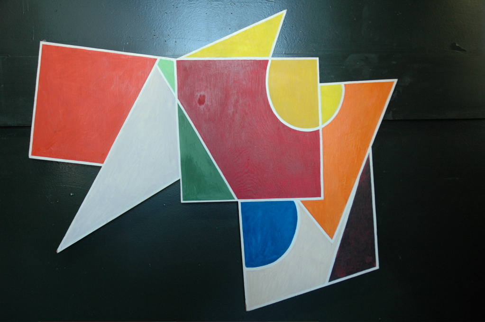
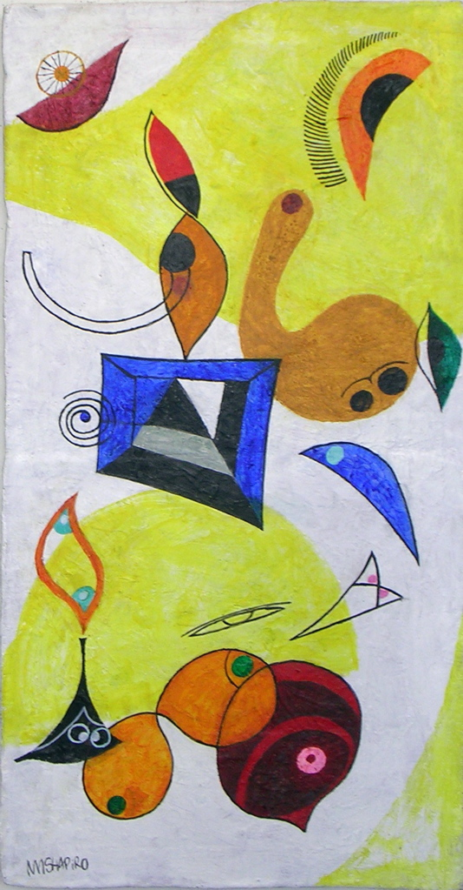
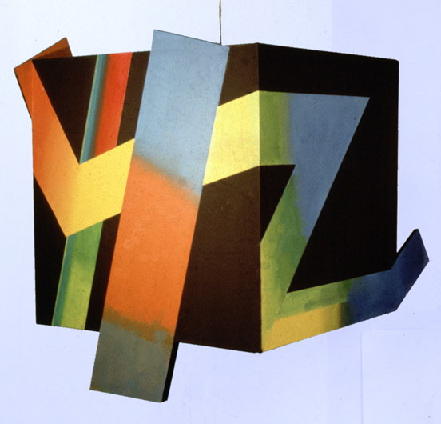
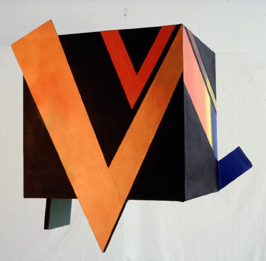
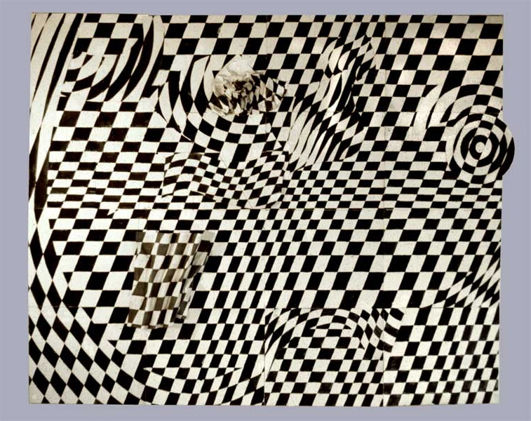

Nat Mayer Shapiro
Actualités
Biographie / Biography
Atelier / Studio
Toiles / Canvas
Papier / Paper
Mixed Media
Mixed Media

Construction/Geometric Forms I / 81cm × 98cm = 32'' × 39''

Eyes / 99cm × 50cm = 39'' × 20''

Kinetic Cube / 79cm × 79cm × 79cm = 31'' × 31'' × 31''

Kinetic Cube / 79cm × 79cm × 79cm = 31'' × 31'' × 31''

Optical Checkerboard / 145cm × 175cm = 57'' × 69''